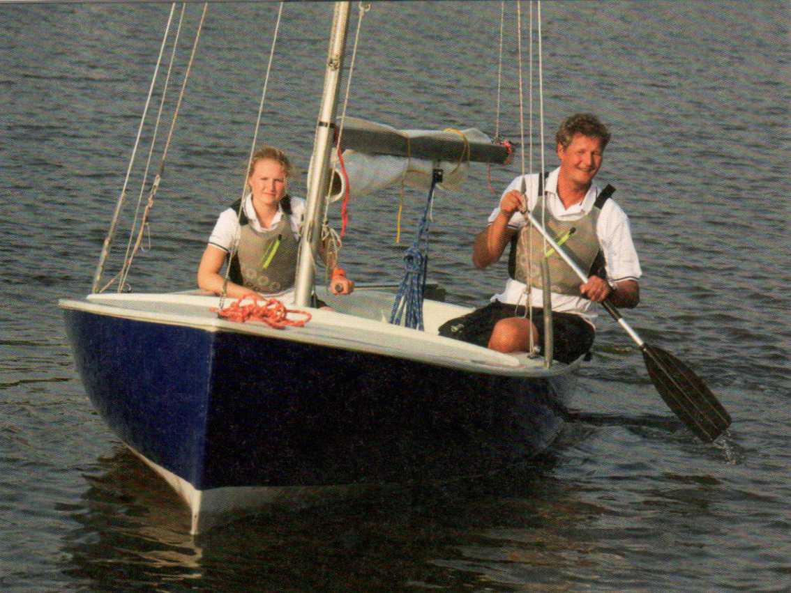
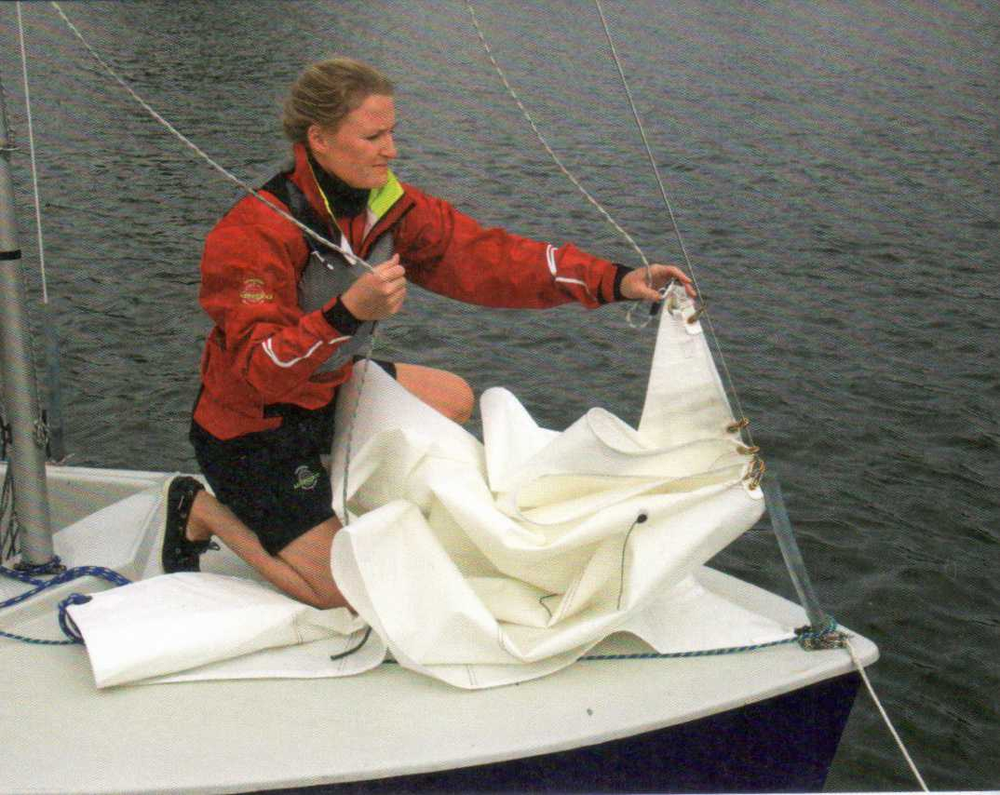
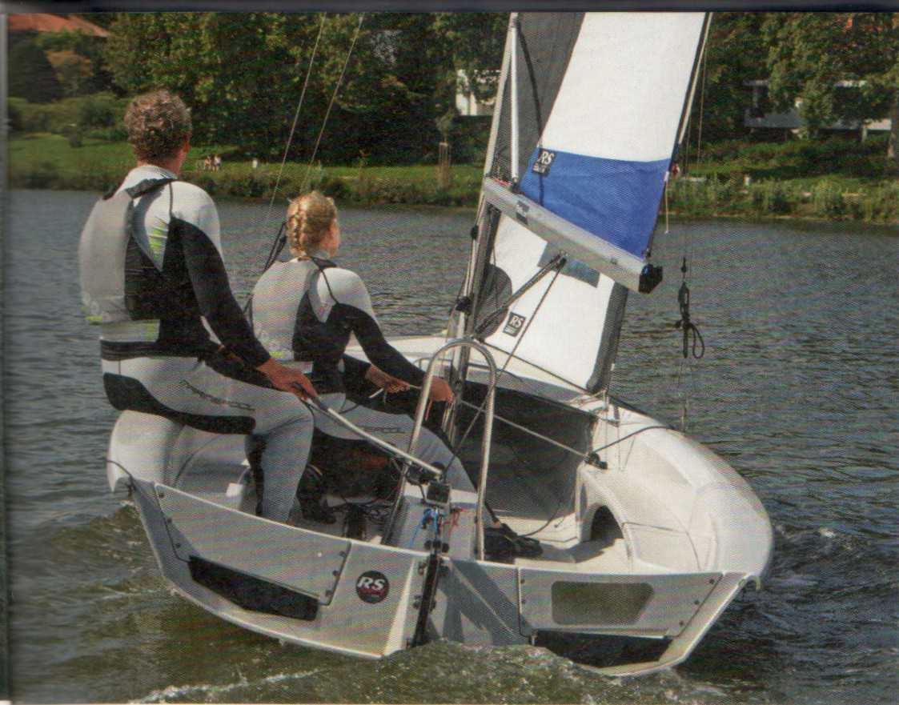
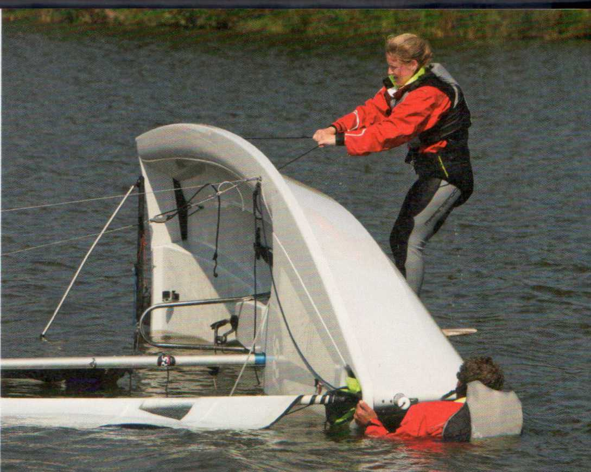
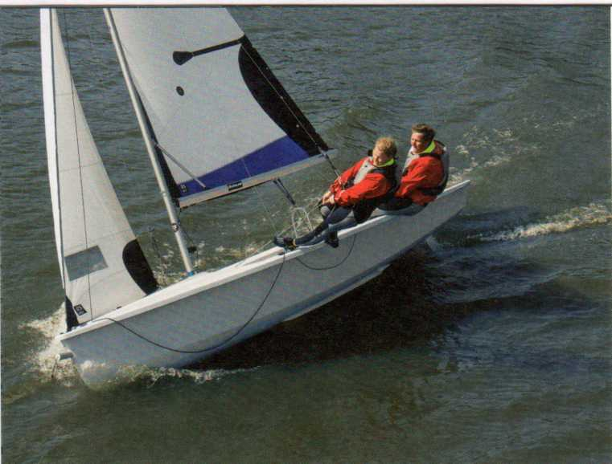
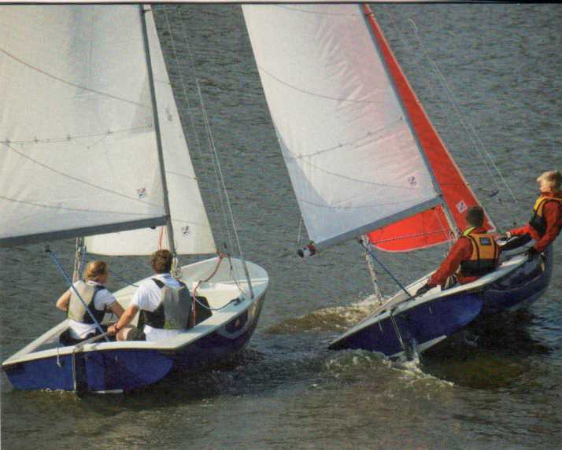

|
10 |
О ЛОДКЕ |
?.6 |
МОРСКАЯ ПРАКТИКА |
36. |
ТЕОРИЯ ПАРУСНОГО СПОРТА________ |
|
11 11 12 13 13 14 14 15 15 16 16 17 18 19 20 21 22 24 25 |
Корпус Швертботы, килевые и многокорпусные суда Формы корпуса Формы носа и кормы Термины, связанные с корпусом Рангоут и такелаж Типы вооружения Мачта и рангоут Стоячий такелаж Бегучий такелаж Тали Парус Части паруса Основные и дополнительные паруса Рифление и рифовое устройство Рифление переднего паруса Оборудование и фурнитура Как называются части швертбота? Штурвальное управление |
27 27 27 27 28 30 30 31 31 32 32 33 34 34 34 35 |
Такелажные работы Материалы Изготовление Сплесень и марка Узлы Беседочный узел с приёмом Крепление на утке Бухтование конца Бухтование фала Уход за лодкой Зимнее хранение Весенний осмотр Транспортировка лодки Перевозка на крыше Перевозка на прицепе Спуск и подъём на слипе |
37 38 39 39 40 40 40 40 41 41 42 42 42 43 44 44 44 |
Обозначения направлений и курсов Курсы относительно ветра Истинный и вымпельный ветер Отход и заход ветра Движущие силы Тяга за счёт сопротивления Тяга за счёт подъёмной силы Боковая сила Угол атаки паруса Ветровой снос (дрейф) Остойчивость Остойчивость формы Весовая остойчивость Приводящий и уваливающий моменты Водоизмещающие и глиссирующие суда Скорость корпуса Динамическая подъёмная сила |
|
45 |
ПРАКТИКА ПАРУСНОГО ДЕЛА | ||||
|
46 46 46 48 49 50 50 50 51 51 51 53 54 54 55 56 57 57 58 58 60 62 63 64 64 |
Привязывание парусов Привязывание грота Привязывание стакселя Подъём парусов Настройка стакселя Настройка грота Уборка стакселя Уборка грота Укладка грота Отход задним ходом Отход от причала Отход от буя Неполное приведение к ветру Швартовка к причалу Швартовка к бую Швартовка по ветру Положение парусов |
65 66 67 67 67 67 68 68 69 69 69 70 72 74 75 76 77 79 79 80 \ 80 80 81 |
Положение шверта Положение экипажа Положение парусов Положение шверта Положение экипажа Положение парусов Положение шверта Положение экипажа Регатный поворот фордевинд Непреднамеренный поворот фордевинд Цель под ветром Человек за бортом — что делать? Манёвр Подъём человека на борт |
85 85 85 86 88 89 89 90 90 90 91 92 92 92 93 94 94 95 96 97 97 97 97 |
Борьба с порывами ветра Ложиться в дрейф Опрокидывание и восстановление Что делать после опрокидывания? Снос течением Действия буксирующего Действия буксируемого Буксирный караван Типы якорей Якорный конец и якорная цепь Якорная стоянка Постановка на якорь Снятие с якоря Огнетушители Радарные отражатели Речная радиосвязь |




|
98 |
МЕТЕОРОЛОГИЯ |
102 |
ПРАВИЛА ПЛАВАНИЯ | ||
|
99 99 100 100 100 |
Циклоны и антициклоны Бриз Грозы Штормовые предупреждения Шкала Бофорта |
103 104 104 105 105 106 106 107 HO 110 HO 111 112 113 114 115 |
Правила движения Маломерные суда Управление судном и обязанность осторожности Удостоверения на внутренних водных путях и судовые документы Маркировка Флаги Общие правила этикета Обозначения фарватеров Паводок Зоны купания |